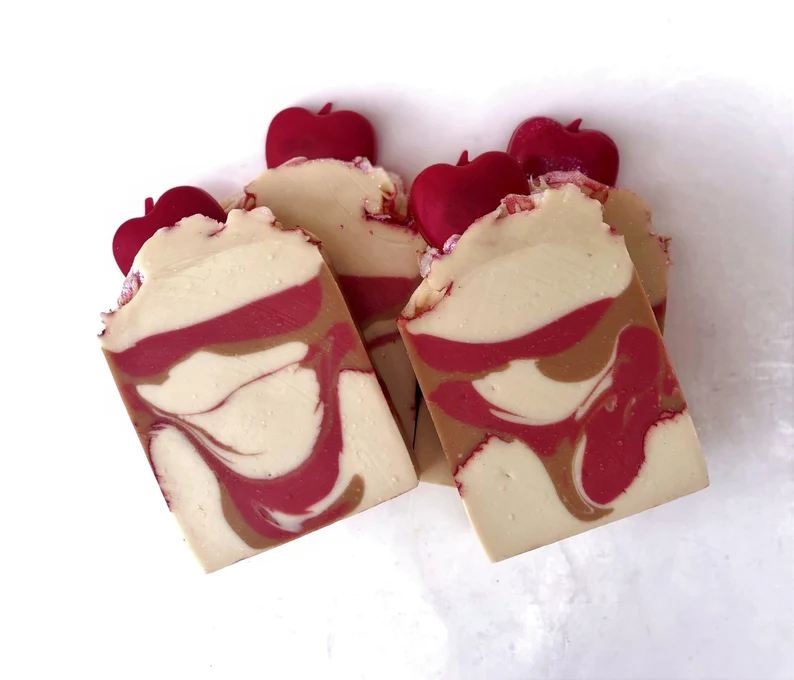

Frequently Asked Questions
Question 1: What are the benefits of using handmade soap?
Answer: Handmade soap is crafted with natural ingredients and essential oils,
providing numerous benefits for your skin.
These include moisturizing, nourishing, and cleansing properties without harsh chemicals found
in commercial soaps.

Our handmade soaps are gentle, skin-loving, and suitable for most skin types. We do host
fragrance oils so the most sensitive type skin may have a reaction.
Question 2: Are your products cruelty-free?
Answer: Yes, all our products are cruelty-free. We do not test on animals, and
our
ingredients are sourced responsibly and ethically.
Question 3: How long do your handmade soaps last?
Answer: The lifespan of our handmade soaps depends on usage and storage. On
average, each bar lasts between 4 to 6 weeks when kept in a well-drained soap dish away from
water.
Question 4: Do you offer custom orders or personalized scents?
Answer: Yes, we offer custom orders for special occasions or personalized
scents.
Please contact us directly to discuss your requirements and preferences.
Question 5: Are your products suitable for sensitive skin?
Answer: Our products are formulated with gentle, skin-loving ingredients and
are
suitable for most skin types.
 However, if you have specific sensitivities to fragrance oils, oils,
or allergies, we recommend reviewing the ingredient list or conducting a patch test before use.
However, if you have specific sensitivities to fragrance oils, oils,
or allergies, we recommend reviewing the ingredient list or conducting a patch test before use.
Question 6: How do I properly store handmade soap?
Answer: To extend the lifespan of your handmade soap, store it in a cool, dry
place away from direct sunlight and humidity. A well-drained soap dish is ideal for allowing the
soap to dry between uses.
Question 7: Do your products contain artificial fragrances or colorants?
Answer: Our products are free from artificial fragrances and colorants. We use
skin-safe micas and natural essential oils to provide scent and color, such as organic micas and earthly materials such a clays, which double to the texture for the lather.
Learn more about the difference between natural and synthetic fragrances.www.privelabel.com
Why it matters, at EWG.org
Question 8: Are your packaging materials eco-friendly?
Answer: Yes, we strive to minimize our environmental impact by using
eco-friendly and recyclable packaging materials whenever possible. We are committed to
sustainability and reducing waste.
Question 9: Can I use your handmade soap on my face?
Answer: While our handmade soap is gentle and formulated with skin-loving
ingredients, we recommend using a specific facial cleanser for delicate facial skin. Our body
soaps are suitable for the rest of your body.
Question 10: Do you offer international shipping?
Answer: Yes, we offer international shipping to select countries. Shipping rates
and delivery times may vary depending on the destination. Please contact us for more information
regarding international orders.